Assignment 0
Using AWS Academy, EC2, Linux Shell, and AI Coding CLI
Due Fri May 22, 11:59 PM ET
FAQs
- Typo fixed: Rows containing
cloud--> Rows containing rust. - If you use WSL, make sure to store your SSH key file under your Ubuntu home directory. Windows filesystem does not work well with
chmod 400. How to locate your/home/userdirectory is by typingcdand that will automatically bring you to your home dir. - Accessing the SSH key file stored under a cloud drive (OneDrive, Dropbox, or Google Drive) might have permission issue. If that happens, move
vockey.pemto a local directory not under any cloud-managed folder and that should fix the permission issue. - For Windows user, we recommend installing WSL (the Windows Subsystem for Linux). You can find the installation documentation here. With WSL, you can use the familiar Linux commands for SSH, file operations, and all other kinds of shell-related tasks.
- To copy your submission file from remote EC2 to local, you can use
scp(SSH copy). To do so:
scp -i vockey.pem ubuntu@YOUR_ADDRESS:PATH_TO_YOUR_FILE .Note that calling scp from EC2 to copy file out will not work as your computer is behind NAT so it is almost not possible to be directly addressable. You need to run scp from your computer to copy file in from a remote EC2, which is addressable.
Overview
To ensure a uniform development environment, you will do all your assignments for DS5110 using AWS Academy. Through AWS Academy, you can get access to a wide range of computing, storage, and network resources on Amazon Web Services (AWS). If you haven't worked with AWS Academy before, you need to go through the AWS Academcy onboarding process.
This assignment will walk you through the AWS Academy registration process and show you how to use AWS and Linux EC2 from AWS Academy to setup an environment for upcoming programming assignments.
Learning outcomes
After completing this assignment, you should be able to:
- Create and SSH into an EC2 virtual machine (EC2) instance.
- Create a remote Jupyter Notebook server running on AWS EC2.
- Get familiar with AI coding CLIs (opencode).
- Get familiar with basic Linux shell commands (browsing file system, installing packages, etc.).
Part 0: Register an AWS Academy account
You will receive a course invitation email sent to your virginia.edu email. You will need to register with AWS Academy Canvas (note this is different from UVA Canvas) before you can participate in the AWS Academy Learner Lab. To register, click on Get Started in the invitation email. It will bring you to the Welcome Aboard web page. Enter a password under your email, select Eastern Time (US & Canada) as the Time Zone, and click on Register.
After successfully registered, you will have access to your AWS Academy portal. You will see the AWS Academy Learner Lab under Dashboard. Click on Accept to accept the invitation to join AWS Academy Learner Lab if you see a message at the very top of the web page.
Click on AWS Academy Learner Lab at the Dashboard to enter. Then click on Modules to view the available modules. Before start using AWS resources, I highly encourage you to go through the AWS Academy Learner Lab Student Guide to get you familiar with how to use Learner Lab (including how to start a lab, how to track your credit, etc.).
To start using the AWS resources, click on Launch AWS Academy Learner Lab under Module, which will bring you to the Terms and Conditions. Click on I agree and enter the lab session.
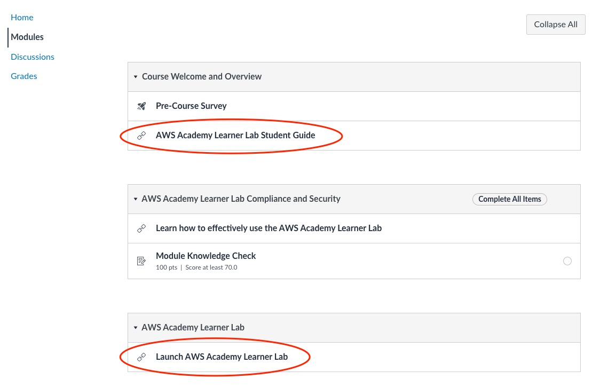
The lab session is a web terminal interface with limited functionality. To start the lab, click on Start Lab at the top of the web terminal interface. The starting process should take a few minutes (if this is the very first time you start the lab, as in the background AWS Academy creates a temporary AWS account for you under the Learner Lab). At the same time, you can see your available AWS cloud credit with a total amount of $50 and how much you have used. When the signal light at the top left corner turns green, it indicates the lab has started.
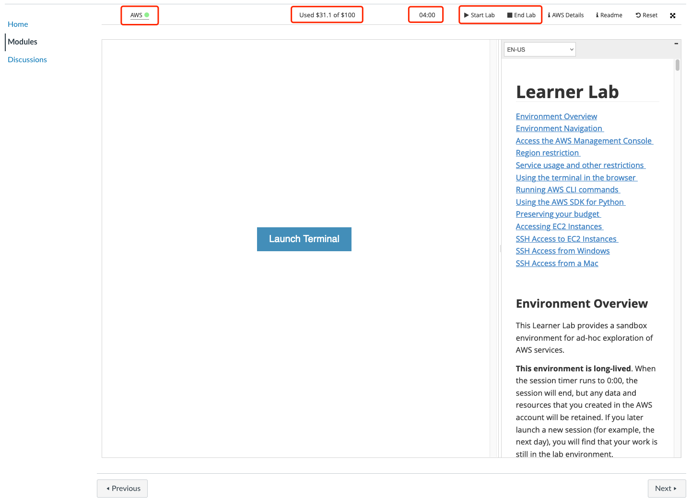
Click on the green signal light to access your AWS Console Home web page.
A started lab session has a session duration of up to four hours (see the timer 04:00 in the figure above). When the lab session timer runs to 0:00, the session will automatically end, but any data and resources that you created in the AWS account will be retained. If you later launch a new session (for example, the next day), you will find that your work is still in the lab environment. Running EC2 instances will be stopped and then automatically restarted the next time you start a session.
At the AWS Console Home page, click on Services at the top left corner and click on Compute to view all the available computing services that you may use. Click on EC2 to start creating new EC2 VM (virtual machine) instances.
Part 1: Create and access EC2 instances
Step 1: Create a name and choose an OS image for your VM
Under EC2, click on Launch instances to start creating a new VM. Type a name to label your VM under Name and tags. For example, name your first instance vm0.
We recommend using Ubuntu Server 22.04 LTS as the OS image and 64-bit (x86) as the architecture. You can also specify the number of instances to launch at this time. To start off, choose 1. Later for Assignment 1 choose 2 and for Assignment 2 choose 5.
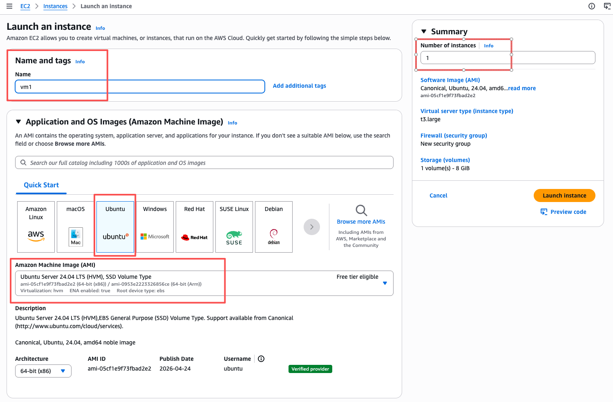
Step 2: Choose an EC2 instance type
Next choose an EC2 instance type. To test, you can always create one or multiple t2.micro or t1.micro, both of which are free tier eligible, meaning the resource is free of charge. There are, however, a limited range of EC2 instances that you can choose from. We recommend using the t3.large instance type that comes with 2 vCPU cores and 8 GB of memory.
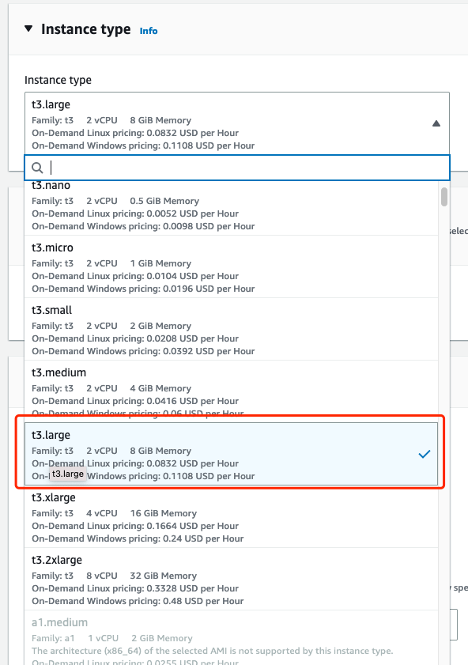
Step 3: Choose an SSH key pair
What is important when creating new VMs is that you choose a key pair for SSH login. Under Key pair (login), click on the drop down menu and select vockey (type rsa).
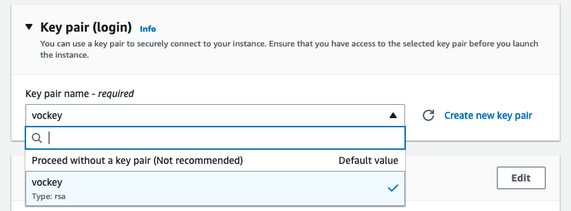
Step 4: Check HTTP/HTTPS options
Under Network settings, under Firewall (security groups), choose Create security group, and enter a security group name of your choice. The default inbound securiy group rules support SSH, which is what you need to log into the created VM. This may be later reconfigured by adding protocol support (TCP, HTTP, HTTPS).
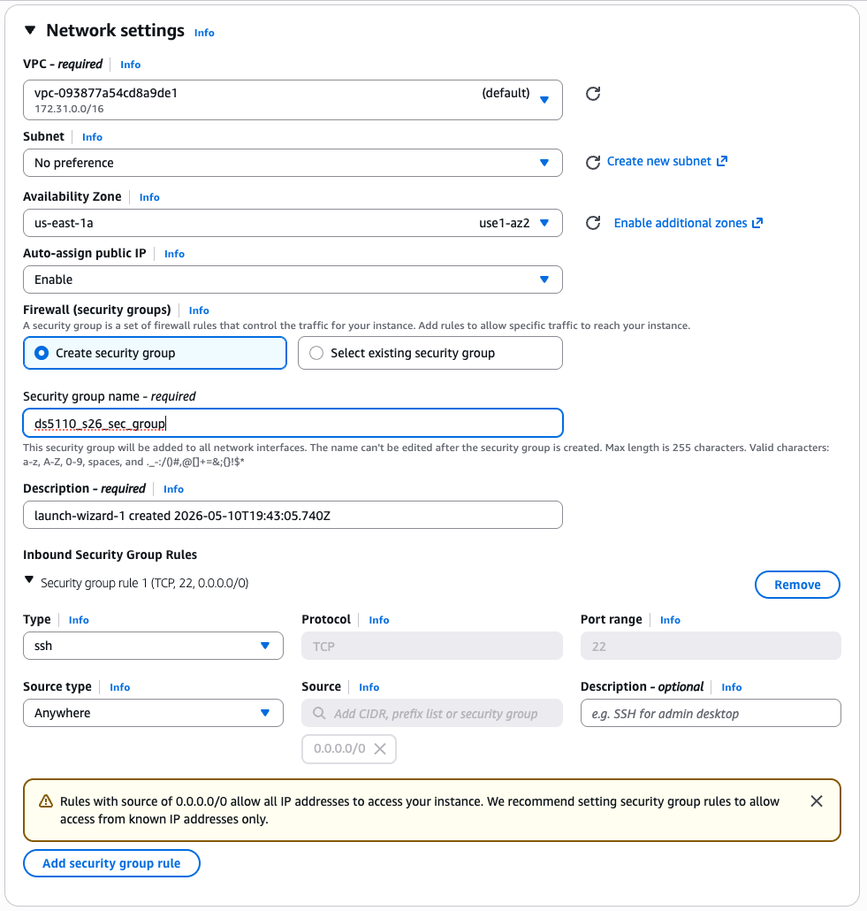
Step 5: Configure storage
You may also increase the storage capacity of the Root volume under Configure storage. By default you will be allocated a small 8-GB root disk. We recommend increasing it to 50-100 GB so that you have sufficient disk storage capacity for dependency installation and storing datasets. Optionally, you can also add a new EBS volume just in case the root volume runs out of capacity (it runs out of space very fast considering the installation of quite a few large software packages and datasets). To save cost, you don't need an additional 100GB storage volume.
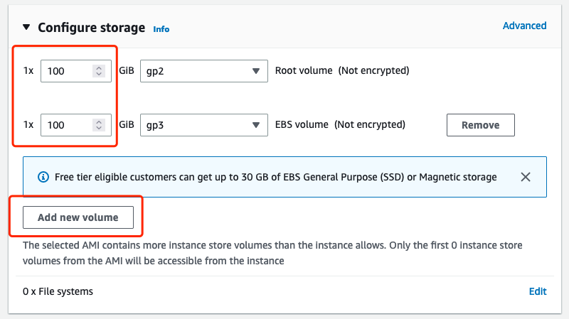
Step 6: Configure the subnet availability zone
We recommend launching all your EC2 instances in the same availability zone. Any US east zones should be fine. This can be configured in Network settings. Once choosing one, always stick with it when creating new EC2 instances. This is to guarantee the best network performance among your EC2 instances. For example, you may choose to use a subnet within an availability zone of us-east-1a and stick with it.
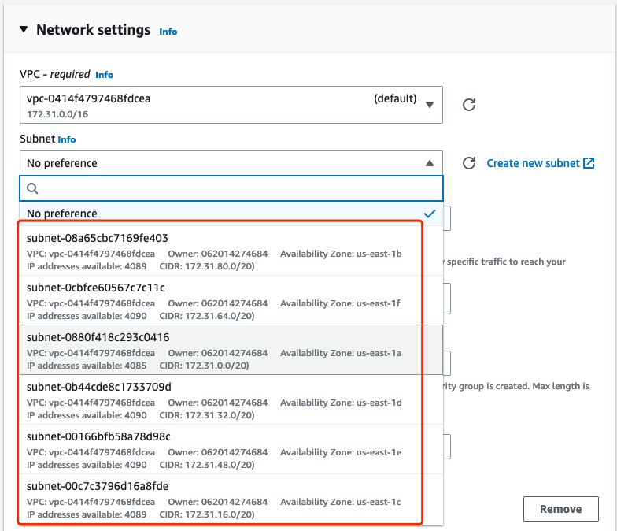
Step 7: Launch the EC2 instance
After finalizing the EC2 VM configuration, click on the Launch instance button on the right side to launch the configured VM. It may take a few minutes to start the VM.
Step 8: Download the SSH private key
Now go back to the Learner Lab web page. This is where you can download the SSH key. Click on the AWS Details tab, you will see the information you need to login to your computing resources. Under SSH key, click on Download PEM to download the SSH key to your local computer. It comes with a default name of labsuser.pem.
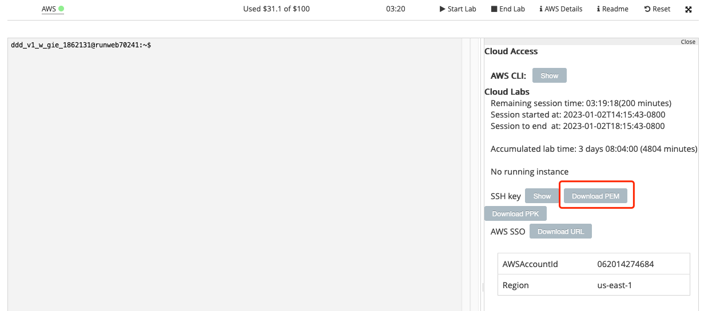
Step 9: Login to the EC2 instance through SSH
Open a terminal (if you use a MacBook, open the Terminal software; if you use a Windows, we recommend installing WSL), locate your private key file that you have just downloaded locally, change its name to vockey.pem and update its permission, if necessary, to ensure your key is not publicly viewable:
% mv labsuser.pem vockey.pem
% chmod 400 vockey.pemThen, connect to your instance using the following command:
% ssh -i "vockey.pem" ubuntu@[public_IPv4_DNS_address_of_your_EC2_instance]To view the connection instruction, click on the instance ID from your AWS Console, then click on Connect at the top right corner of the page to view the public DNS address of your EC2 instance. An example name looks something like this: ubuntu@ec2-11-222-3-190.compute-1.amazonaws.com, where ubuntu is your default username on any EC2 instances that you created.
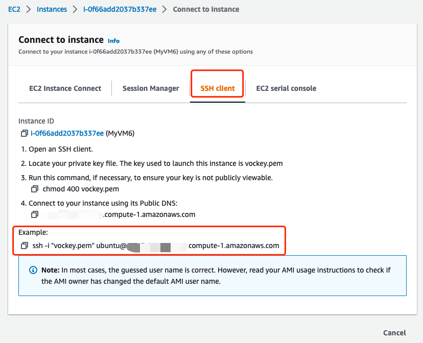
Great! So far you should be able to SSH login to a remote Linux VM computer that you have just created on AWS running on somewhere in some North Virginia datacenter!
Part 2: Installing OpenCode AI coding CLI
This part will walk you through the steps of installing OpenCode, an open-source AI coding command-line interface (CLI). A CLI is also called a TUI (text-based user interface). It is different from GUIs (graphical user interfaces), which are designed mainly for humans to interact with software through visual elements such as windows, buttons, menus, and icons. In contrast, a TUI exposes interaction through plain text commands and text outputs. This makes coding CLIs especially friendly to LLMs: the model can directly read the current context, issue commands, inspect the output, and decide the next step. In other words, while GUIs are optimized for human eyes and mouse clicks, TUIs are naturally optimized for language-based interaction, which is exactly what LLMs are good at.
This tutorial is provided so that you don't need to repeat the same logistics for Assignment 1 and 2, as you will need to use OpenCode in an EC2 to complete the next two assignments.
Step 0: Install OpenCode
First, install opencode.
$ sudo apt update
$ curl -fsSL https://opencode.ai/install | bash
$ source /home/ubuntu/.bashrc
$ which opencode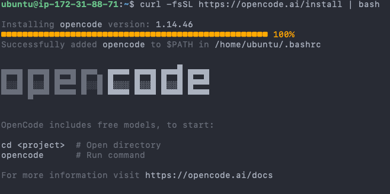
The fourth command above, which opencode, should output /home/ubuntu/.opencode/bin/opencode if it's successfully installed.
Step 1: Run OpenCode
To run OpenCode in your EC2 VM:
$ opencodeIt will bring you to a TUI like this:
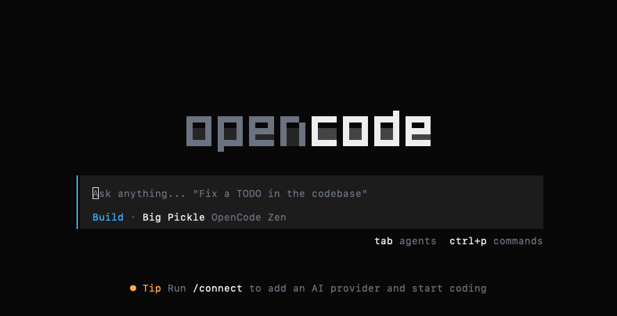
Use / to open the command menu in your OpenCode session. To switch models, type /models and press Enter. By default, OpenCode provides four free models, though this may change over time. For this assignment, I recommend using MiniMax M2.5.
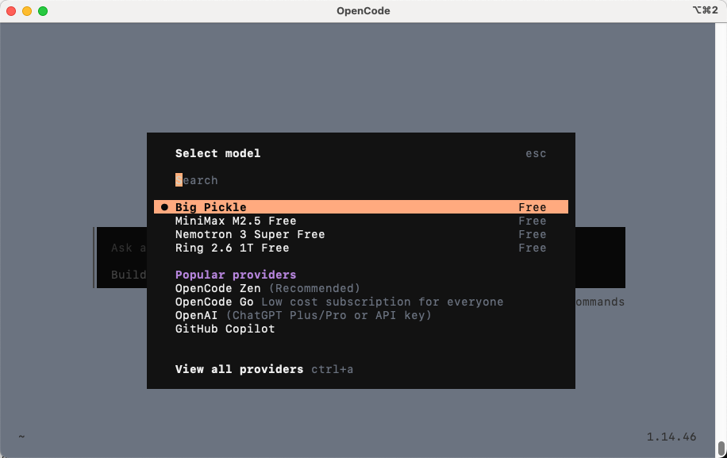
For other non-free models, you need either a paid API key from a certain API provider such as OpenRouter an activechatbot subscription, ChatGPT Plus/Pro.
Part 3: OpenCode Meta-programming
If you have successfully cleared all previous parts and steps, congratulations! Now you have a cloud VM with a basic AI coding development environment.
In this part, you will use OpenCode to practice a small but important skill: metaprogramming.
Traditionally, metaprogramming means writing programs that generate, inspect, or modify other programs. For example, a script that creates another script is doing metaprogramming. A code generator that writes boilerplate code for you is also doing metaprogramming.
In the AI coding era (initially called vibe coding), metaprogramming becomes even more natural. Instead of writing every line of code manually, you describe the program you want in natural language (which in our case, English, ask an AI coding agent to generate or modify it, then inspect, test, and improve the result. The important skill is not blindly accepting generated code. The important skill is learning how to give a clear specification, understand the generated code, run it, debug it, and verify that it does exactly what you asked for, with the help of a coding agent.
In this task, you will use OpenCode to help you create a small program. The program will download a dataset, extract it, search through CSV files, and count how many lines contain the text "python".
You should use one of the free models provided by OpenCode for this task. We will provide you with paid API access through OpenRouter for the next two assignments.
The program that you will build with OpenCode is very simple: it does something as follows:
Create a Python program named ds5110_s26_a0.py.
The Python script should download and analyze a small StackOverflow dataset. It should:
- Download a zip file from https://drive.google.com/uc?id=1vlczaocHyghEW5Q-6WprqB2nnna_wrLE
- Extract the zip file downloaded into a directory named
stackoverflow_data. - Load all CSV files under
stackoverflow_data. - Count how many rows contain each of the following keywords, case-insensitively:
python
java
javascript
sql
rust- Print a report in the following format:
Number of CSV files: <number>
Total number of rows: <number>
Rows containing python: <number>
Rows containing java: <number>
Rows containing javascript: <number>
Rows containing sql: <number>
Rows containing rust: <number>
Most common keyword: <keyword>- The script should be safe to run multiple times. If the zip file or extracted directory already exists, it should not crash.
- The script should be organized using functions, with a
main()function as the entry point.
- The script should print only the report above. Do not print debugging messages, progress bars, or extra text.
You should use OpenCode to help you create this program. However, you are responsible for reading, testing, and understanding the final code.
After generating the program, run:
$ python3 ds5110_s26_a0.pyExport the OpenCode session transcript markdown file named opencode_session_transcript.md. To do so, type /export in your OpenCode session and change the transcript file name when prompted. Include thinking, tool details, and assistant metadata in the exported transcript.
Then create a short file named notes.txt answering:
1. What was one issue, bug, or improvement you found in the generated code? (Leave blank if the coding agent passes it in one shot.)
2. How did you verify that the final output was correct?Deliverables
You should submit a tar.gz file to Canvas, which follows the naming convention of LastName_FirstName_ComputingID_A0.tar.gz. The submitted file should contain the following: ds5110_s26_a0.py, opencode_session_transcript.txt and notes.txt.
tar.gz file: tar -czvf [submission_file_name] ds5110_s26_a0.py opencode_session_transcript.txt notes.txt.You can resubmit your assignment an unlimited number of times before the deadline. Note the late submission policy: assignments will be accepted up until 3 days past the deadline at a penalty of 10% per late day; after 3 days, no late assignments will be accepted, no exceptions.